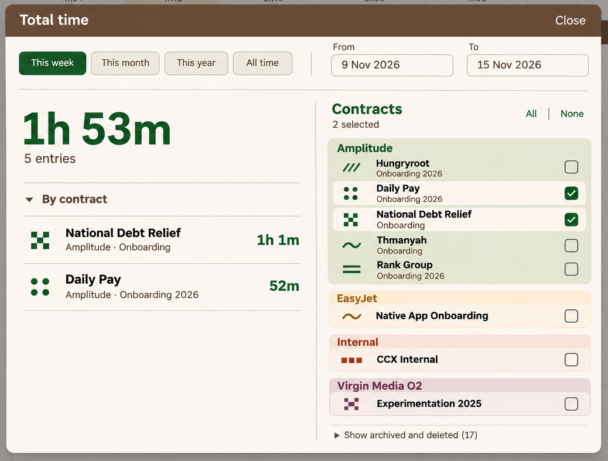
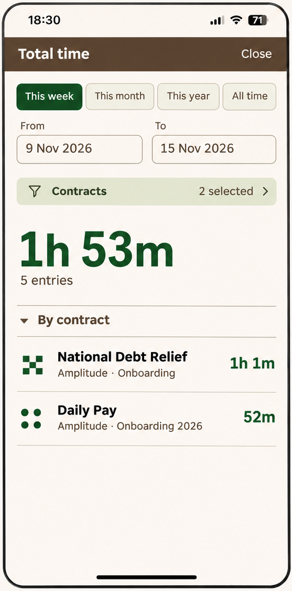
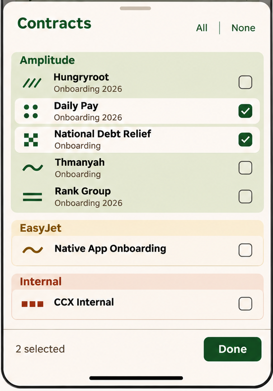

Chronolog · Total time
Engineering handoff · Revision 1 · 10 November 2026
This is a focused UI specification for the existing Total time screen. Routing and the MVP already exist. The owner approved the second mobile draft and the desktop adaptation shown in this bundle.
Open index.html to read the illustrated pack offline, or use the Markdown sources:
- UI specification — layouts, interaction, responsive behaviour and supporting states.
- Acceptance checks — implementation verification and source-dependent checks.
- Image guide — original renders, panel crops and limits of the visual references.
- File verification — image provenance, crop fidelity and package checks.
Contents and authority
Both approved renders are preserved unchanged in images/raw/. The specification embeds whole-screen/widget crops from images/crops/. Crop rectangles and checksums are recorded in images/manifest.json.
The written specification defines behaviour. The renders define visual composition; their sample data, incidental backgrounds and pixel dimensions are not production data or a new token system. Use the app's existing colours, assigned contract patterns, components and terminology.
The approval evidence in the conversation is:
- Mobile: “Love the second draft.”
- Desktop: “Perfect, write up a spec for the engineers with the images and zip it up.”
This pack carries those approved designs forward. Supporting edge states and accessibility details are labelled engineering requirements; they were not separately rendered. Existing calculation, date, selection and persistence semantics must be checked in source and retained where this UI work does not explicitly change presentation.
Scope
Implement the approved responsive presentation for Total time and its contract selector. Preserve the existing route, totals calculation, date presets, multi-selection and archived/deleted access. No app source was supplied for this handoff, so component filenames, exact breakpoints and existing query behaviour have not been verified.
The previous broader Chronolog reskin is reported as implemented. This is an additive specification for this screen, not a revision of that entire handoff.
Total time — UI specification
Status: approved mobile and desktop design direction. Behaviour below consolidates the approved explanation; supporting states and integration details are engineering requirements.
1. Purpose and scope
Show the total logged time and entry count for a chosen date range and set of contracts, with a per-contract breakdown. Keep the result prominent and the controls compact. Reuse the existing Total time route and data/calculation model.
The shared state consists of the date range, selected contract IDs, existing preset state, breakdown disclosure and archived/deleted disclosure. Mobile and desktop present the same selection and result; opening a mobile picker must not create a separate copy waiting for Apply.
Preserve existing initial selections, date defaults and reopening/persistence behaviour. The sample below does not require two particular contracts to be selected by default.
2. Desktop layout


Full source: desktop-approved.png.

TT-01 · Centred modal
Retain the centred modal over the dimmed Time Entries screen. Give it a bounded width and height, with visible margins around it. It must fit the available viewport rather than grow with the entire contract list.
Use the compact bark-coloured header: Total time on the left and Close on the right. The modal contains one close action. Do not add a Save, Apply, Done or Cancel footer.
TT-02 · Shared date toolbar
Place the four presets on the left and the labelled From/To fields on the right in one compact toolbar below the title. A thin horizontal rule separates it from the content.
Preset order follows the approved treatment: This week, This month, This year, All time. The active preset has the existing pine/selected treatment. From and To are separate outlined controls with a visible gap; their borders must not touch or overlap. Both endpoints remain directly editable.
The screenshots use “9 Nov 2026” and “15 Nov 2026”. Preserve the app's established date picker/parsing and locale behaviour; the design does not require replacing the native input implementation.
TT-03 · Result and selector side by side
Use two columns, separated by a quiet vertical rule:
| Left: result | Right: contract selection |
|---|---|
| Prominent total, entry count and expanded By contract section | Contracts heading, selection count, All/None and client-grouped checkbox list |
| Flexible width for readable contract names and aligned durations | Enough width for names, subtitles and consistently aligned checkboxes |
| No duplicate Contracts filter button | No Done/Apply action; changes are live |
The approved raster is a composition reference, not an exact percentage split. Keep the modal header and date toolbar accessible. The contract list scrolls independently without moving the total. If a long breakdown also exceeds the available height, scroll its rows within the result area while preserving the total/count and column header.
3. Mobile layout


Full source: mobile-approved.png.

TT-04 · Main results screen
Use the existing full-width mobile presentation and Close navigation. Keep the header compact, respecting the top safe area. Avoid the MVP's oversized empty header region.
Content order:
- Preset row.
- From/To date fields, side by side with a clear gap.
- One Contracts · N selected row with filter icon and disclosure.
- Prominent total and entry count.
- By contract disclosure and result rows.
Do not repeat the date range as a long ISO-formatted caption above the total. The date inputs already supply that context. Do not place the full selection checklist under the results.
Allow the main page to scroll for a long breakdown; do not require the hero total to occupy a permanently fixed portion of a small phone viewport.
TT-05 · Mobile contract sheet


Full source: mobile-approved.png.
Tapping Contracts opens a tall sheet above the dimmed results screen. Use the same grouped selection component and state as desktop.
- Sheet header: Contracts, with small All and None text actions.
- Body: scrollable client groups and contract rows.
- Anchored footer: N selected on the left and Done on the right.
- The selected count appears once inside the sheet, in its footer; do not repeat it beneath the sheet title.
- Respect the bottom safe area. Reserve space for the footer so it never covers the final row.
Selections update the underlying result immediately. Done only closes the sheet. Other supported sheet dismissals have the same selection-retention semantics; dismissal does not roll back changes. Close on the main screen exits Total time through its existing navigation.
The mobile reference shows only part of the available client list. Virgin Media O2 and the archived/deleted disclosure must remain reachable by scrolling; they are not removed because they fall outside that crop.
4. Shared result treatment
TT-06 · Total and breakdown
Use bold pine typography for the total, with a quieter entry count directly below. Format duration using the app's existing duration formatter; do not introduce decimal-hour conversion or new rounding rules.
The By contract section is expanded by default when results are first presented, and retains its disclosure affordance. Once the user toggles it during the open session, filter updates should not force it open again.
Each row contains:
- The contract's existing pattern mark.
- The readable contract name as the primary label.
- Smaller client/contract context where useful.
- Duration aligned to the right.
Use thin separators, without a padded card around every result. Names may wrap; durations must remain readable without colliding with text. The sample order is not a new sorting specification: retain the current breakdown ordering unless it prevents a coherent existing rule.
TT-07 · Sample data is illustrative
Both approved renders use the same filtered example:
| Contract | Duration |
|---|---|
| National Debt Relief Onboarding | 1h 1m |
| Daily Pay Onboarding 2026 | 52m |
| Total | 1h 53m |
The combined count is 5 entries. No per-contract entry counts were supplied. These figures demonstrate layout; they are not defaults or hard-coded application data.
5. Contract selector
TT-08 · Grouping, identity and selection
Group contracts by client. Use the established client-colour tint for each group, with readable client headings. Do not repeat a client short code plus its full name, or add a decorative dot beside the heading.
Rows have the contract pattern at left, name/context in the middle and checkbox at the far right. Make the whole row a usable selection target while retaining a real labelled checkbox for keyboard and assistive technology.
Selected rows reveal the standard chalk background within the tinted client group. Checkboxes use the existing selected control style rather than browser-default bright blue. Unselected rows retain the group's tint.
Reuse each contract's current assigned pattern and client colour. The generative render's illustrative motif mappings must not reassign production identities.
Use existing display-name logic where available. The illustrated split into “Hungryroot” and “Onboarding 2026” is presentation, not a new data field. Do not hard-code names or split arbitrary strings by brittle rules; wrapping the actual contract name is preferable when no reliable short label exists. Avoid redundant subtitles, such as repeating “Onboarding” beneath Native App Onboarding or adding it to CCX Internal.
TT-09 · Counts and bulk selection
Show N selected based on the selected contract IDs, including selected contracts with no entries in the current range. It is not the count of contributing rows in the breakdown.
All/None reuse the existing bulk-selection scope and behaviour. The scope of archived/deleted inclusion must be confirmed in source; this reskin must not silently broaden or narrow it. Changing the date range does not clear contract choices.
Use live updates throughout. There is no pending filter transaction and no Apply/Save step.
TT-10 · Archived and deleted contracts
Retain Show archived and deleted (N) as a collapsed disclosure after the active groups. The rendered 17 is sample data; calculate the label from the existing model.
Expanding the section reveals the existing eligible historical contracts. Selecting them filters their existing time records; it does not restore, unarchive or modify the contracts. Closing the disclosure must not silently deselect hidden checked rows. Preserve whatever distinguishing archived/deleted labels the current implementation provides.
6. Date and filtering behaviour
TT-11 · Preserve existing range semantics
Reuse current definitions of This week, This month, This year and All time, including timezone, inclusivity, week start and historical bounds. The preset sets the existing date state. Manual edits update that same state; the active preset indication must remain accurate rather than claiming This week after the range no longer matches it.
Do not create an ISO/calendar-week change, new time-entry inclusion rule or different treatment of running entries as part of this UI pass. Confirm those semantics against the implementation.
Once a valid range/selection is available, use the existing update mechanism to refresh the total, count and breakdown together. Preserve ordinary date-input editing states; do not repeatedly query with partially typed invalid dates.
TT-12 · Supporting states
These are engineering requirements to make the approved layout complete; they were not separately rendered.
| State | Result area | Controls |
|---|---|---|
| No contracts selected | Show the MVP's dash and No contracts selected; no stale breakdown | Keep dates and selector usable; do not silently fall back to All |
| Selected contracts, no matching entries | Show a zero duration using the existing formatter, 0 entries, and a concise no-entries message | Preserve the selected contracts and range |
| Invalid/incomplete date range | Identify the affected field(s); do not show an old total as the result of the invalid range | Preserve typed values for correction; no automatic swap of endpoints |
| Loading, if retrieval is asynchronous | Indicate updating without presenting stale data as current or flashing a false zero | Keep layout stable; use the existing loading strategy |
| Retrieval failure | Show an inline failure/retry state; preserve the last entered filters | Do not reset selection or fabricate totals |
| Rapid filter changes | Display only the result for the latest valid filter state | Ignore outdated asynchronous responses |
Distinguish no selection from a valid selection with no time.
7. Responsive and interaction requirements
TT-13 · Layout transition
Use a content-fit breakpoint consistent with the app's existing responsive system. Do not infer an exact CSS threshold from the PNG dimensions.
When there is enough width/height, use the desktop modal with two columns. At narrow widths, use the mobile result layout and sheet selector. Short desktop windows retain internal scrolling rather than cropping controls or forcing a fullscreen desktop presentation.
A resize must retain the current range, selected IDs and results. If the picker was open and the layout becomes wide, the same selection is available in the desktop column. Returning narrow must not create conflicting selector state or duplicate overlays. Exact focus transfer is an engineering detail.
TT-14 · Accessibility and focus
Reuse the app's dialog/sheet primitives where possible. Keep focus within the active overlay, return focus to its trigger on dismissal, provide a clear accessible dialog name and keep keyboard focus visible.
Checkbox labels include the full meaningful contract name. Space toggles the focused checkbox. Date inputs retain visible labels. The All/None and disclosure controls remain keyboard reachable. When a date popup or sheet is open, Escape dismisses the innermost overlay first rather than unexpectedly exiting the entire screen.
Respect safe areas, zoom and increased text size. Do not rely on colour/pattern alone to identify selection; readable names and checkboxes remain present.
8. Visual implementation boundaries
Use the existing implemented Chronolog typography, spacing, controls and colour tokens. The approved composition is compact, warm and graphic, with a prominent result and quieter controls.
The PNGs are not CSS measurements, production pattern assets or a requirement to recreate their incidental app background. The desktop render's background totals and names are illustrative. Implement this Total time surface; no unrelated shell, routing, data-model or timesheet changes are specified.
Acceptance and integration
No application tests have been run for this handoff. These are checks for the engineering implementation.
Verify against the existing code
The screen already has routing and an MVP. Inspect these details before changing them:
| Area | Preserve / establish |
|---|---|
| Range semantics | Inclusive/exclusive dates, timezone, preset definitions, All time bounds and date input parser |
| Calculation | Entry eligibility, running-entry handling, duration precision/rounding and breakdown ordering |
| Selection | Existing initial defaults, bulk All/None scope, hidden historical selections and reopening persistence |
| History | Archived/deleted record availability and labels; disclosure count calculation |
| Identity | Actual client colours, contract-pattern assignments and safe display-name formatting |
| UI integration | Existing modal/sheet primitives, breakpoints, focus/keyboard conventions and asynchronous loading strategy |
No new API, component library or data schema is prescribed. The live filter state should be shared across desktop and mobile presentations.
Acceptance checklist
| ID | Scenario | Pass condition |
|---|---|---|
| A01 | Open on desktop | Centred bounded modal; compact title/date toolbar; result and selector visible together |
| A02 | Open on mobile | Compact header, presets, separated date fields, Contracts row, total/count and breakdown in that order |
| A03 | Open the mobile selector | Client-grouped sheet; scrollable list; pinned count/Done footer; no duplicate selection count inside sheet |
| A04 | Toggle Daily Pay and National Debt Relief | Both layouts show the same selected IDs and recompute total/count/breakdown together |
| A05 | Close the mobile sheet with Done or supported dismissal | Selection remains applied; no Save/Apply transaction or rollback |
| A06 | Clear all selection | Dash and No contracts selected; stale rows disappear; no automatic All fallback |
| A07 | Select a contract with no entries in range | Zero result and 0 entries; contract remains selected and included in N selected |
| A08 | Choose each date preset | Existing range semantics retained; active preset indicator and date controls agree |
| A09 | Edit the dates | Both endpoints editable; clear gap; no overlapping borders; invalid states preserve input |
| A10 | Rapidly change filters | Latest state wins; obsolete responses cannot overwrite current results |
| A11 | Use All/None with historical section expanded/collapsed | Existing intended scope retained; disclosure visibility alone does not clear checked rows |
| A12 | Select archived/deleted contracts | Existing historical time can be included; contract lifecycle state is unchanged |
| A13 | Scroll a long desktop contract list | Header/date controls and result summary stay visible; no page-height growth |
| A14 | Scroll a long breakdown | Rows remain usable without displacing the desktop total/count or hiding modal controls |
| A15 | Resize between wide and narrow | Dates, selection and results persist; no duplicate selector state or overlays |
| A16 | Keyboard and assistive technology | Modal name, full checkbox labels, visible focus, logical order and focus return work |
| A17 | Long names / increased text size | Text wraps without colliding with checkboxes/durations or making controls unreachable |
| A18 | Load failure / loading | Filter choices remain; no false zero or stale result presented as current; recoverable failure |
| A19 | Pattern/colour review | Existing production identities reused; selection remains obvious from checkboxes and labels |
| A20 | Use approved sample fixture | 61m + 52m = 113m (1h 53m), combined count 5; no invented per-contract count |
| A21 | Toggle By contract | Starts expanded for results; user collapse is respected across filter updates in the session |
| A22 | Exit Total time | Existing Close navigation works; no new save/discard behaviour or unrelated state mutation |
Deliverable verification
The bundle preserves the two approved raw renders and three direct panel crops. Source hashes, crop rectangles and link/integrity checks are recorded with the images and validation report. These checks validate the handoff files, not the application.
Image guide
Approved full renders
| File | Role |
|---|---|
| mobile-approved.png | Approved second mobile draft, showing results and the contract sheet |
| desktop-approved.png | Approved desktop adaptation, with result and selector side by side |
These raw files are unchanged copies of the generated renders. No earlier rejected drafts are included.
Whole-panel crops
| Crop | Source | Bounds: left, top, right, bottom |
|---|---|---|
| mobile-results.png | mobile-approved.png | 66, 58, 623, 1181 |
| mobile-contract-sheet.png | mobile-approved.png | 692, 393, 1243, 1181 |
| desktop-modal.png | desktop-approved.png | 250, 139, 1288, 927 |
Coordinates refer to original image pixels. Left/top are inclusive; right/bottom are exclusive. Crops are not resized or retouched. Full provenance and checksums: manifest.json.
Interpretation
- Reuse actual assigned contract patterns and client colours; do not replace them with motifs extracted from these rasters.
- Dates, totals, counts and visible contracts are illustrative.
- The mobile crop ends before some historical/other-client content; keep the full existing list and archived/deleted disclosure available by scrolling.
- Desktop background UI is incidental context, not part of this change.
- Exact font sizes, spacing and breakpoints come from the implemented app's system and actual layout fit, not screenshot pixels.
The written specification defines behaviour where a still image cannot.
File verification
Revision 1 · 10 November 2026
| Check | Result |
|---|---|
| Approved source images | Two raw PNGs match their original generated files byte for byte; SHA-256 hashes are in the image manifest |
| Panel crops | Three crops match the corresponding source rectangles pixel for pixel, without resizing or retouching |
| Image decoding | All five PNGs decode completely |
| Visual review | Desktop modal, mobile results screen and mobile contract sheet crops reviewed; whole panels and their controls are included |
| Requirements | 14 unique UI requirement IDs and 22 unique acceptance-check IDs |
| Sample arithmetic | 61m + 52m = 113m = 1h 53m; count of 5 is illustrative supplied sample data |
| Document links | All local Markdown/HTML references resolve; internal HTML anchors exist and are unique |
| Offline reader | One HTML reading copy with embedded CSS; no remote resource dependencies |
| Package integrity | ZIP CRC and byte-for-byte correspondence of every archive entry checked after packaging |
The PNGs are composition references, not production assets. The offline reader was checked structurally; no browser rendering test or application test was performed. No app source was available. The engineering acceptance checklist is prospective, not a report of implemented behaviour.
See image provenance, UI specification and acceptance checks. SHA256SUMS.txt
records the bundle files except itself.